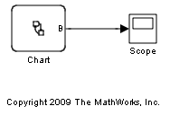
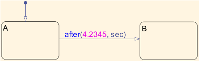
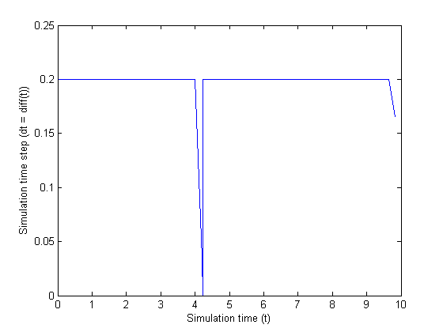

ゼロ クロッシングが存在する場合の絶対時間の時相論理
このモデルでは、ゼロ クロッシングが有効な連続時間の Stateflow® チャートでの絶対時間の時相論理の動作を説明します。
モデルは、A と B の 2 つのステートを含んでいる単一の Stateflow チャートで構成されています。遷移は、式 after(4.2345,sec) によって管理されます。
以下の点に注意してください。
- チャートでは、[更新方法] が [連続] に設定され、オプション [ゼロ クロッシング検知を利用] がオンになっています。
- 使用する可変ステップ ソルバーでは、ゼロ クロッシングが有効です。
モデルをシミュレートすると、次の出力が表示されます。

シミュレーション時間に対してシミュレーション タイムステップをプロットすると、次のように表示されます。
ご覧のように、ソルバーは極めて正確に A から B への遷移が発生した時間を検出しています。